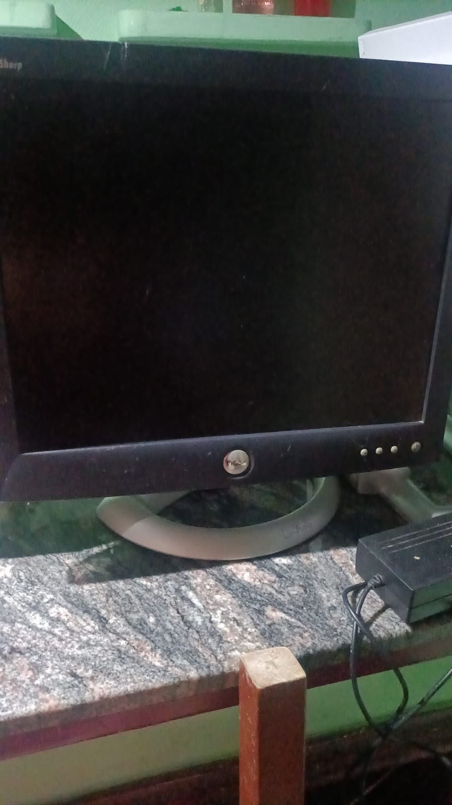
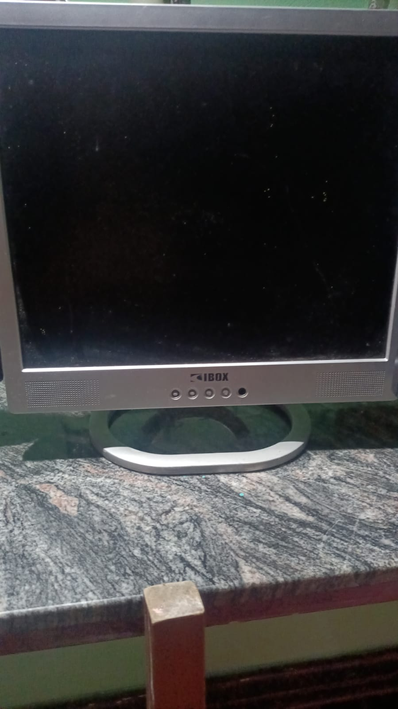
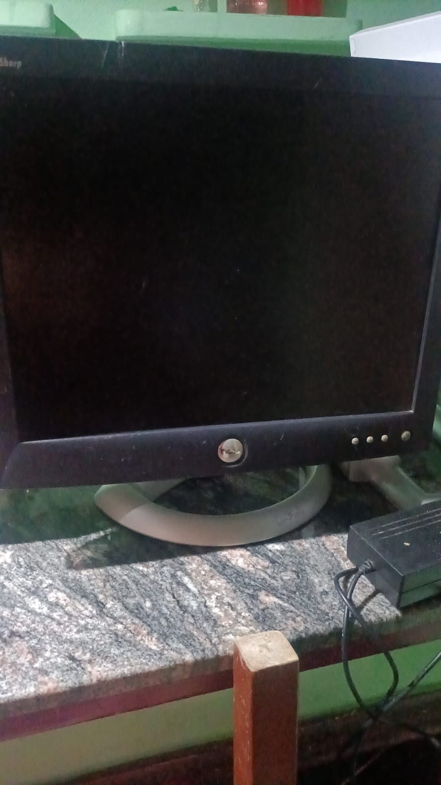
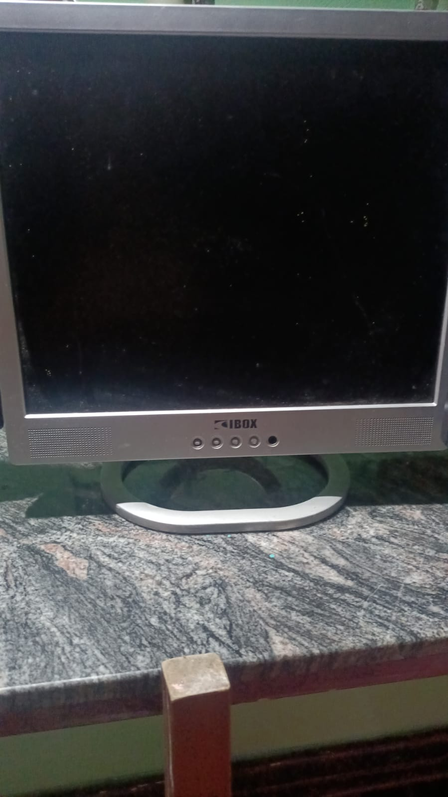

XxAlitokerxX Mi Cueva Digital: Donde Tú Eres la Inspiración
¡Qué tal, familia! Soy Alejandro, y quiero contarles sobre este rinconcito llamado XxAlitokerxX Mi Cueva Digital 🚀. Aquí, no importa si no tienes títulos o si tus únicas referencias técnicas son las que has aprendido por tu cuenta. Lo que realmente importa es que todos somos apasionados y estamos dispuestos a compartir lo que nos gusta. 🎉
Un Viaje de Descubrimiento a la Chatarra 🕵️♂️
Les cuento que, aunque no soy un "genio de la tecnología", tengo una conexión especial con los cachivaches electrónicos. Mi historia comenzó en lugares inesperados, como chatarrerías y basureros. ¿Qué encuentro por allá? Desde monitores antiguos de PC hasta laptops que ni te imaginas. Cada trasto tiene su propia historia y algo que enseñarnos. 🧐
 



Rescatando y Dando Vida a las Reliquias 🛠️
Hoy, les abro las puertas para que se unan a mí en este espacio donde valoramos lo que todavía funciona, sin importar si es viejito. Cada cacharro que rescatamos tiene el potencial de ser revivido y de mostrarnos algo nuevo. Pero, ojo, aquí no solo hablamos de tecnología; estamos dispuestos a recibir cualquier tema que les apasione. 🔧

Comparte tu Pasión y Despierta la Creatividad 🎨
XxAlitokerxX Mi Cueva Digital es un lugar donde todos pueden expresarse sin miedo. Si eres fanático de la tecnología, las artes, la ciencia, la música, la cocina o lo que sea, aquí tienes tu tribuna. ¿Quieres compartir proyectos, dar consejos o simplemente desahogarte? ¡Este es el lugar perfecto para hacerlo! 🤗
Hablemos sin Filtros 🗣️
Quiero que este sea un espacio de conversación sincera. ¿Cuál es tu pasión? ¿Qué te motiva cada día? ¿Tienes una historia que nos haga sonreír o reflexionar? Aquí, cada voz tiene valor, y tus pensamientos y opiniones cuentan. Únete a esta charla y descubre las perspectivas únicas que cada uno de nosotros aporta. 💬
De Todo un Poco 🌐
En XxAlitokerxX Mi Cueva Digital, no hay límites para los temas. Tecnología, creatividad, cocina, o lo que sea que te interese, ¡aquí se escucha! Esto es solo el comienzo de una comunidad diversa y en crecimiento constante. Mantente atento para más publicaciones sobre un montón de temas distintos. 🌍
XxAlitokerxX Mi Cueva Digital es el espacio donde compartimos, exploramos y aprendemos juntos. Todos formamos parte de esta comunidad donde celebramos nuestra diversidad de pasiones e intereses. Espero verte pronto en la Cueva Digital, donde cada uno de nosotros tiene su lugar y cada pasión es motivo de celebración. ¡Únete a nosotros en este viaje de descubrimiento y charla! 👋
deja tu comentario 👉️Aqui!!!